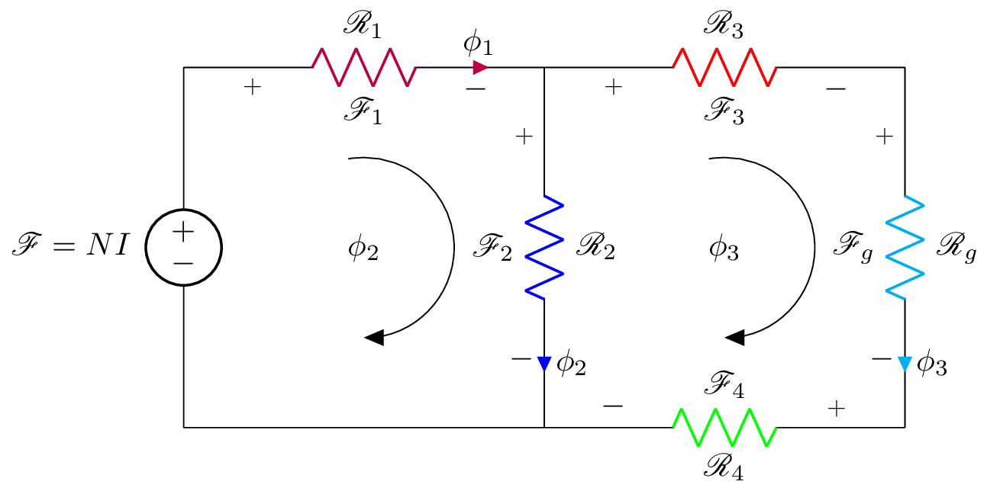

\documentclass{standalone}
\usepackage[american]{circuitikz}
\usepackage{graphicx}
\usepackage{mathrsfs}
\usepackage{latexsym,amssymb,amsmath}
\newcommand{\equal}{=}
\begin{document}
\begin{circuitikz}
\draw (0,4) to [V,l_=$\mathscr{F}\equal NI$] (0,0)
(0,4) to [R,i>=$\phi_1$, l^= $\mathscr{R}_{1}$,v_>=$\mathscr{F}_1$, color=purple] (4,4)
(4,0) -- (0,0)
(4,4) to [R,i^>=$\phi_2$, l^= $\mathscr{R}_{2}$,v_>=$\mathscr{F}_2$, color=blue] (4,0)
(4,4) to [R,l^= $\mathscr{R}_{3}$,v_>=$\mathscr{F}_3$, color=red] (8,4)
(8,4) to [R,i^>=$\phi_3$, l^= $\mathscr{R}_{g}$,v_>=$\mathscr{F}_g$, color=cyan] (8,0)
(8,0) to [R, l^= $\mathscr{R}_{4}$,v_>=$\mathscr{F}_4$, color=green] (4,0);
\draw[thin, <-, >=triangle 45] (6,2) node{$\phi_3$} ++(-90:1) arc (-90:100:1);
\draw[thin, <-, >=triangle 45] (2,2) node{$\phi_2$} ++(-90:1) arc (-90:100:1);
% \node (phi) at (4.25,0.5) {$\phi_2$};
% \draw[-stealth] (4.25,2.5) to [bend left=90] (phi);
\end{circuitikz}
\label{fig:q1fig}
\end{document}Created by David Li